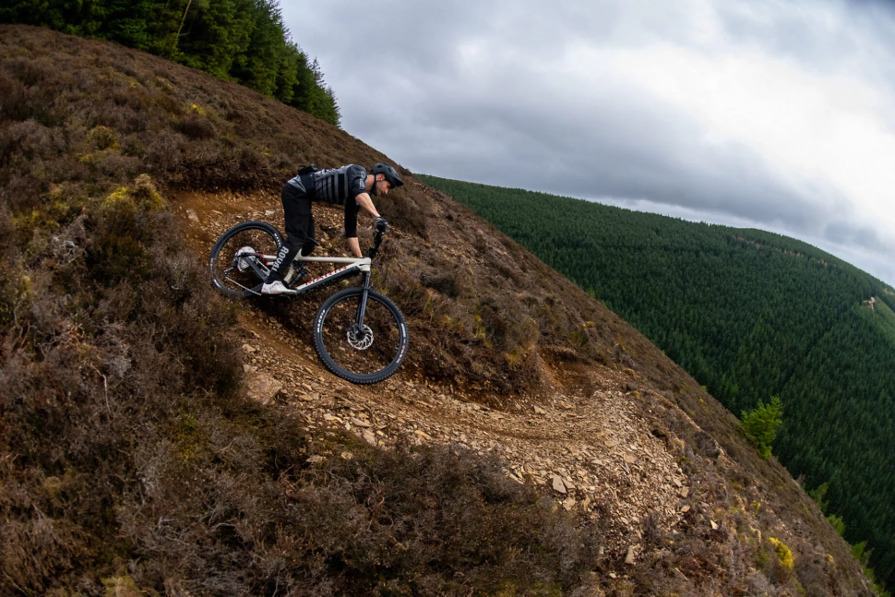
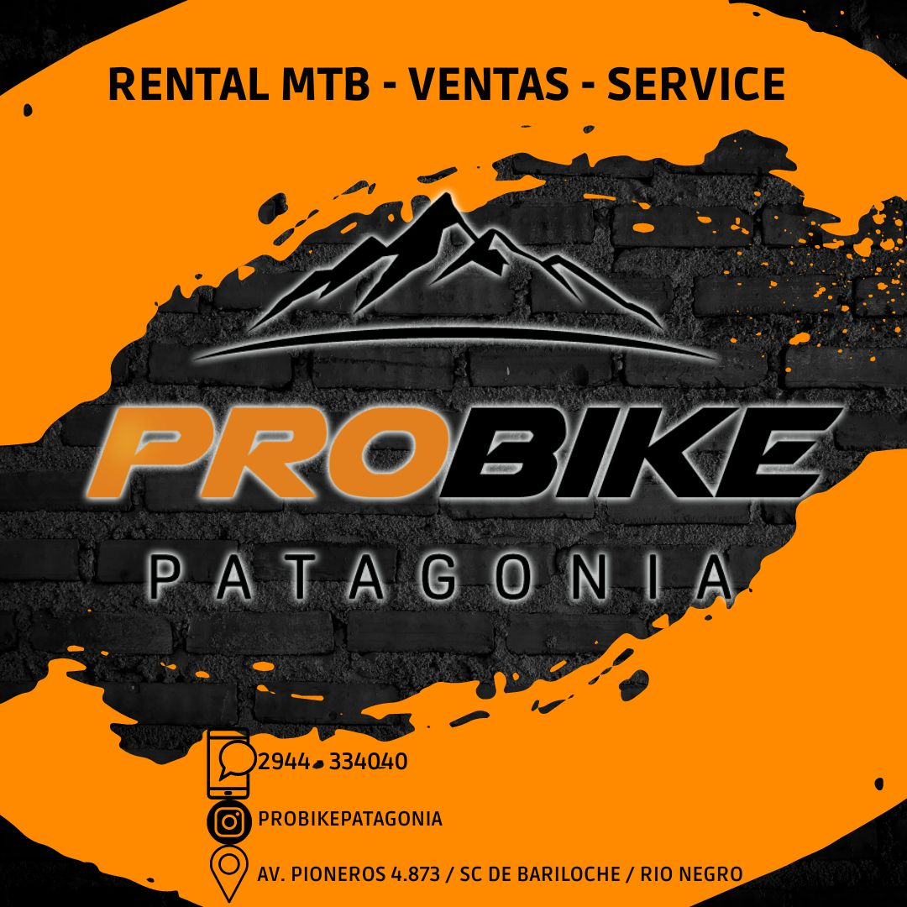

Galería





Explorá Bariloche sobre dos ruedas
Venta y alquiler de bicicletas, servicio técnico, repuestos y accesorios. Representantes de MARIN BIKES con local físico en Bariloche / Rio Negro - Patagonia Argentina

🕒 Horarios:
Lunes a Viernes:
10:00 a 12:30 hs y 15:30 a 19:30 hs
Sábados:
10:00 a 13:00 hs
📍 Av. Pioneros 4873, Bariloche
📞 +54 294 433-4040